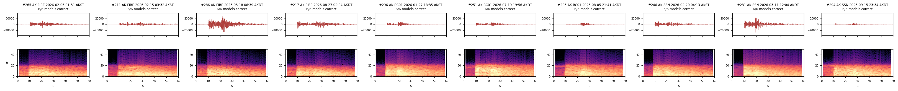
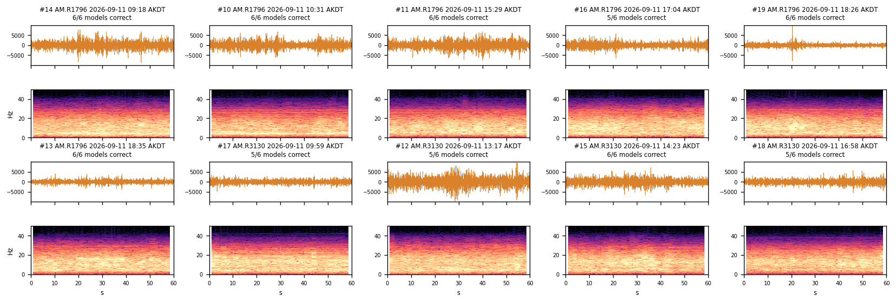
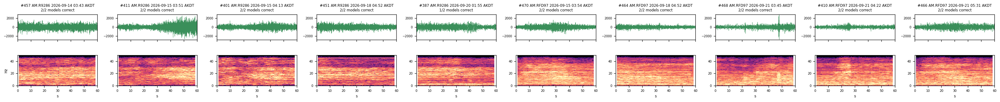
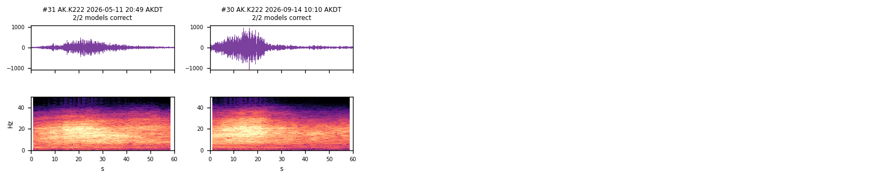
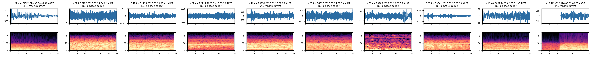

Denolle Lab · University of Washington · SeismicML with Concord Consortium
tiny-cnn-seismicML
Small convolutional networks that tell earthquakes, traffic, trains and aircraft apart in 60 s of vertical ground motion from seismometers around Anchorage, built to run in a middle-school browser.
Each window carries one global integer label. The integers never change; a model trains on a subset of classes, remapped to outputs 0…K−1 in the order listed in its metadata.json.
Label
Class
Source
Models
0
Noise
quiet hours (01–05 local) at every station, and pre-P windows for the earthquake set
all
1
Traffic
six Raspberry Shakes at Anchorage schools, including Romig Middle School (AM.R1796, R3130): daytime windows and night vehicle passes
compact-v3, v4, v6 · standard-v2, v3, v5
2
Earthquake
USGS ComCat events M≥3 near Anchorage, windows around the catalog P pick at AK broadbands
compact-v3, v5 · standard-v2, v4
3
Avalanche
not yet collected
none
4
Train
AK.K222 at Potter Marsh, 100 m from the Alaska Railroad, found from the passenger timetable
compact-v4 · standard-v3
5
Aircraft
Turnagain Shakes AM.RFD97 and AM.R9286, 3 km north of the ANC north–south runway
compact-v4 · standard-v3
Stations
12 stations supply every training and held-out window. All use the vertical component. Window counts are the labeled training sets before any Noise cap; a traffic station-day is kept only when its daytime level is at least twice its night level, so some stations have fewer days than the week, and two of the eight configured stations (S8E18, R9CCB) have none.
* Raspberry Shake publishes station coordinates rounded for the hosts' privacy. Treat AM positions as neighbourhood-scale, good to about 1 km.
Anyone can pull the same data from the public FDSN services. AK data come from EarthScope (IRIS), AM data from Raspberry Shake:
# AK.K222 strong motion, one hour (UTC)
https://service.iris.edu/fdsnws/dataselect/1/query?net=AK&sta=K222&cha=HNZ&starttime=2026-09-14T18:00:00&endtime=2026-09-14T19:00:00
# AM.R1796 geophone, one hour (UTC)
https://data.raspberryshake.org/fdsnws/dataselect/1/query?net=AM&sta=R1796&cha=EHZ&starttime=2026-09-11T18:00:00&endtime=2026-09-11T19:00:00
# the same in ObsPy
from obspy.clients.fdsn import Client
st = Client("https://data.raspberryshake.org").get_waveforms("AM", "R1796", "00", "EHZ", t0, t0 + 3600)
The collectors that rebuild each set are scripts/collect_ak_events.py (earthquakes) and scripts/collect_continuous_windows.py with configs/am_stations.yaml, train_stations.yaml and aircraft_stations.yaml.
Labels
No window was picked by hand. Each class comes from a rule that can be rerun, and the review site lets people check the rule against their own eyes. These rules are weak labels: they are right most of the time, and the held-out section shows windows where a rule was probably wrong.
Class
Rule
Parameters
Earthquake
Catalog event within 150 km, window cut around the ComCat P pick (comcat:p_pick)
M 3.0–7.0, 2020-01-01 to 2025-12-01, 30 s before P to 90 s after (120 s). Up to 10 stations per event. 98 windows dropped after manual review (docs/ak_dropped_windows.csv).
Noise (earthquake set)
Pre-event window at the same station (comcat:pre_p_noise)
60 s from 90 s to 30 s before P, same event list. Windows with earthquakes in them were removed in the manual review.
Traffic
Time of day at an urban school Shake (timeofday)
07–19 AKDT = Traffic (a seeded 30% kept), 01–05 AKDT = Noise, other hours dropped. A night window with a raw peak ≥20× the station's median night RMS is a single vehicle pass and becomes Traffic. A station-day counts only if its daytime 5–30 Hz level is at least twice its night level. Windows within 120 s of a USGS M≥2 event within 2° are dropped.
Train
Alaska Railroad passenger timetable, then an energy search (events)
Search ±900 s around each scheduled passage at K222; windows with RMS ≥3× the median of that span are Train, the rest of the span is dropped. Noise = 01–05 AKDT windows below 3× the local median (removes unscheduled freight).
Aircraft
High-frequency energy seen at both Turnagain Shakes at once (rule)
20–45 Hz RMS ≥2.5× the local 15-minute level for ≥15 s, on both stations. Noise = 01–05 AKDT. This set is band-passed 2–45 Hz; every other set is 2–20 Hz.
Five training windows per class (seed 42), each 60 s of filtered counts with its spectrogram below. Signal rows share one amplitude scale per row. The Noise row has one window from each site (AK broadband, Romig, K222, Turnagain) plus one random window, each on its own scale: quiet K222 is about 2 counts rms, Romig about 200. Aircraft and Turnagain windows are band-passed 2–45 Hz, so their spectrograms show energy above 20 Hz that the other rows cannot. Earthquake crops start 10 s before the catalog P pick. Drawn by scripts/plot_label_examples.py.
Training data
All models share one pipeline, in notebooks/03_training/train_cnn_multiclass.ipynb. In order:
Preprocess. Merge, linear detrend, demean, 4-corner Butterworth band-pass 2–20 Hz (2–45 Hz for the aircraft set), resample to 100 Hz. Windows with data gaps are dropped. Amplitudes stay in filtered counts.
Crop to 60 s. Every model input is 6,000 samples. Continuous windows are already 60 s. Each 120 s earthquake window gives two crops: one that starts before the P arrival and one from anywhere in the window, so the model sees onsets and coda.
Normalize. Each crop is z-scored on its own (subtract mean, divide by standard deviation). The models never see absolute amplitude, so a loud site and a quiet site look alike; this is also why a new sensor's noise can be mistaken for a signal.
Balance. K222 alone has 8,848 quiet windows. Noise is capped per station (seed 42) so no single site stands for the class; the cap is listed on each model card. Positive classes are never capped.
Pick classes. Windows of classes the model does not learn are dropped and the rest are remapped to 0…K−1.
Split by group.StratifiedGroupKFold (seed 42) puts about 10% of groups in test and 10% in validation. A group is one catalog earthquake (all its crops, all its stations and its pre-P Noise) or one station on one local day. No event or station-day appears in two splits, so the test score is for new events and new days. Every run writes a split manifest to datasets/splits/ listing each crop, its group and its split.
Train. Adam, learning rate 5×10⁻⁴ (compact) or 4×10⁻⁴ (standard), weight decay 10⁻³, batch 32, gradient clipping at 2.0, class-weighted cross-entropy, ReduceLROnPlateau on validation loss, data augmentation on, up to 60 epochs with early stopping after 10 epochs without a 0.001 drop in validation loss. The saved weights are from the best epoch by that rule.
Each checkpoint and training summary records its model id, data sources, class list, Noise cap, split manifest and the git commit of the code that trained it.
Models trained before 2026-09-30 (compact-v2 and standard-v1 in CLUE, and earlier versions of the folders below) used a split by crop, which let crops of one event reach both train and test, and kept the weights of the last epoch rather than the best. Their test scores were inflated; the models on this page were all retrained with the grouped split.
Models
Each training run fits two architectures on the same data. Compact has three convolution blocks and about 9,300 parameters; standard has four convolution blocks and two dense layers, about 94,000 parameters. The tables give precision, recall and F1 on each run's own grouped test split, and accuracy on the shared held-out set (below) with a 95% Wilson interval. The training curves mark the epoch whose weights were saved.
Noise / Traffic / Earthquake
trained 2026-09-30 · 0002aa1
Data
AK earthquake set, the traffic week (6 Shakes), the K222 passenger season and four weeks at Turnagain; windows of other classes dropped. Training pool: 3,496 Noise, 7,663 Traffic, 2,048 Earthquake.
Balance
Noise capped at 300 windows per station (seed 42); 17,621 Noise windows left out.
Split
9,486 train / 1,966 validation / 1,755 test crops, grouped by event or station-day. Test groups: Noise 60, Traffic 5, Earthquake 48. Manifest datasets/splits/split_20260930_140450.csv.
compact-v3compact · 9,347 parameters
94.47% grouped test · 95.3% held-out [92–97%] · weights from epoch 17 of 27
AK earthquake set, the traffic week (6 Shakes), the K222 passenger season and four weeks at Turnagain; windows of other classes dropped. Training pool: 1,800 Noise, 1,800 Traffic, 734 Train, 979 Aircraft.
Balance
Noise capped at 150 windows per station (seed 42); 19,317 Noise windows left out.
Split
4,105 train / 645 validation / 563 test crops, grouped by event or station-day. Test groups: Noise 47, Traffic 4, Train 12, Aircraft 3. Manifest datasets/splits/split_20260930_144039.csv.
compact-v4compact · 9,412 parameters
94.32% grouped test · 92.5% held-out [89–95%] · weights from epoch 35 of 45
AK earthquake set, the traffic week (6 Shakes), the K222 passenger season and four weeks at Turnagain; windows of other classes dropped. Training pool: 1,800 Noise, 2,048 Earthquake.
Balance
Noise capped at 150 windows per station (seed 42); 19,317 Noise windows left out.
Split
3,134 train / 352 validation / 362 test crops, grouped by event or station-day. Test groups: Noise 47, Earthquake 47. Manifest datasets/splits/split_20260930_160804.csv.
compact-v5compact · 9,282 parameters
99.17% grouped test · 97.5% held-out [94–99%] · weights from epoch 25 of 35
AK earthquake set, the traffic week (6 Shakes), the K222 passenger season and four weeks at Turnagain; windows of other classes dropped. Training pool: 1,800 Noise, 1,800 Traffic.
Balance
Noise capped at 150 windows per station (seed 42); 19,317 Noise windows left out.
Split
2,764 train / 493 validation / 343 test crops, grouped by event or station-day. Test groups: Noise 48, Traffic 3. Manifest datasets/splits/split_20260930_161529.csv.
compact-v6compact · 9,282 parameters
95.92% grouped test · 95.0% held-out [91–97%] · weights from epoch 48 of 58
weights.json holds the trained weights in TensorFlow.js layout, exported from the PyTorch checkpoint with scripts/export_compact_weights_for_tfjs.py or export_standard_weights_for_tfjs.py. Steps are in docs/generating-model-weights.md.
To get sensible output, give a model what it was trained on:
one vertical component, 60 s at 100 Hz (6,000 samples);
band-passed 2–20 Hz, then z-scored over the window;
a sensor like the training ones: instrument_types lists SEED instrument codes, the second letter of the channel name. H = seismometer (the BHZ broadbands and EHZ geophones), N = accelerometer (K222's HNZ).
Output is a softmax over class_names, in that order. A model always picks one of its own classes, so a two-class Noise/Traffic model will call an earthquake Noise or Traffic.
Held-out inference
The grouped test splits measure new events and new days from the same collection periods as training. The held-out set measures later data, shared by all eight models: 485 windows from dates after every training set (Train is the one exception, below), labeled by the same rules and drawn evenly across stations (seed 42).
Earthquake: 100 crops from 73 events, 2026-01-17 to 09-23, starting 10 s before P.
Traffic: 100 windows from 6 stations and 30 station-days, 2026-09-14 to 09-19.
Aircraft: 100 windows from 14 Turnagain station-days, 2026-09-14 to 09-21.
Noise: 100 windows, 25 from each of the four sites (12 stations).
Train: 85 windows from 14 K222 days. Passenger service ended on 2026-09-14, so only 2 passages are new; the other 83 come from the grouped test split of compact-v4 / standard-v3, the only models with a Train class, on K222 days they never trained or validated on.
scripts/make_heldout_subset.py rejects any window whose event or station-day appears in any run's train, validation or test split. The waveforms are not published, because the Raspberry Shake terms do not allow redistributing them; heldout_metadata.csv lists the network, station, channel and UTC start of every window, and heldout_predictions.csv every model's prediction for every window.
Model
Grouped test
Held-out, all
Noise
Traffic
Earthquake
Train
Aircraft
compact-v3
0.945
0.95 [0.92–0.97]
0.93 [0.86–0.97]
0.94 [0.88–0.97]
0.99 [0.95–1.00]
standard-v2
0.960
0.96 [0.93–0.97]
0.90 [0.83–0.94]
0.98 [0.93–0.99]
0.99 [0.95–1.00]
compact-v4
0.943
0.92 [0.89–0.95]
0.83 [0.74–0.89]
0.91 [0.84–0.95]
1.00 [0.96–1.00]
0.97 [0.92–0.99]
standard-v3
0.961
0.95 [0.92–0.97]
0.90 [0.83–0.94]
0.93 [0.86–0.97]
1.00 [0.96–1.00]
0.98 [0.93–0.99]
compact-v5
0.992
0.97 [0.94–0.99]
0.97 [0.92–0.99]
0.98 [0.93–0.99]
standard-v4
0.989
0.97 [0.94–0.99]
0.97 [0.92–0.99]
0.98 [0.93–0.99]
compact-v6
0.959
0.95 [0.91–0.97]
0.93 [0.86–0.97]
0.97 [0.92–0.99]
standard-v5
0.974
0.94 [0.90–0.97]
0.99 [0.95–1.00]
0.89 [0.81–0.94]
n=100
n=100
n=100
n=85
n=100
Held-out accuracy with 95% Wilson intervals; only classes a model knows are scored.
What the held-out set shows:
The scores agree with the grouped test. Every model lands within a few points of its grouped test accuracy, so the test split is no longer leaking.
Noise is the hardest class, mostly because of the labels. Quiet Turnagain windows are often called Aircraft by the four-class pair; some of those may be night flights. Two pre-P Noise windows from the earthquake collector hold signal: #12 (SSN) jumps 40× at about 22 s, and #23 (FIRE) is the decaying coda of an earlier event. In training, windows like these were removed by hand; the held-out windows were not reviewed. Night windows #29 (R1796, 01:38) and #28 (R3130, 04:40) show transients that look like vehicle passes below the 20× burst threshold.
Missed Traffic is quiet daytime. Most Traffic windows called Noise are afternoon minutes at RF528 and R2A1A with no clear vehicle; the time-of-day rule labels every daytime minute Traffic.
Out-of-scope windows show what a model does with a signal it was never taught. The Noise/Earthquake models call almost every traffic and aircraft window Noise. The Noise/Traffic models call most train windows Traffic, a reasonable answer for passing vehicles. compact-v4 calls nearly half of the earthquakes Aircraft.
Ten windows of each class, drawn across stations (seed 42) by scripts/plot_heldout_examples.py. Each panel shows the window's subset_id, as in the CSVs, and how many of the models that know its class got it right.

Earthquake: 10 of the 100 crops (73 events), starting 10 s before P.

Traffic: 10 of the 100 windows (6 stations, 2026-09-14 to 09-19).

Aircraft: 10 of the 100 windows (Turnagain, 2026-09-14 to 09-21), band-passed 2–45 Hz.

Train: 10 of the 85 windows, one per K222 day where possible.

Noise: 10 of the 100 windows across the four sites, each on its own amplitude scale.